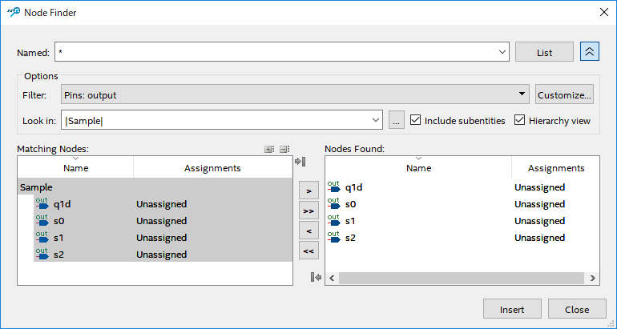
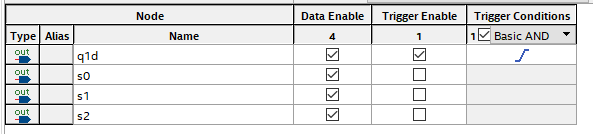
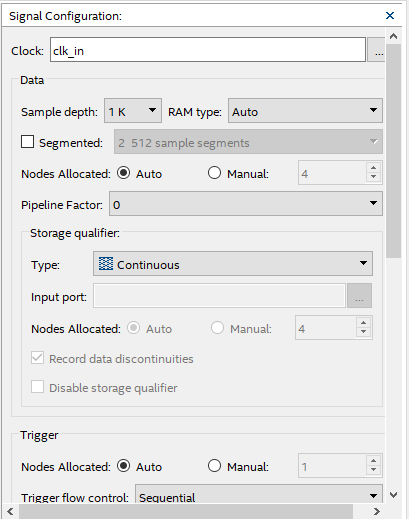
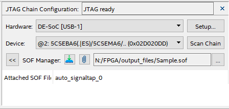

〜項目名をクリックで展開〜
ToolsメニューからSignal Tap Logic Analyzerを起動する。
次に、画面中央でダブルクリックをして観測する信号を選択、Insertする。

Trigger Conditions列の設定したい信号で右クリックをしてトリガ信号を設定する（画面ではRising Edge）。また、トリガを無効にする場合はTrigger Enable列のチェックを外す。

画面右側の Signal Configuration 内で設定を行う。今回は以下の通り設定を行った。

画面右上部の JTAG Chain Configuration 内で設定を行う。SOF Manager の右側に.sof ファイル（この場合は Sample.sof）を指定し、書き込みボタンを押下する（本実験環境において、書き込みに失敗することが何度かあった。その場合は、書き込みボタンをもう一度押下することによって解決した）。

画面上部中央のInstance Manager横の虫眼鏡マークのボタンを押下して波形の観測を開始する。